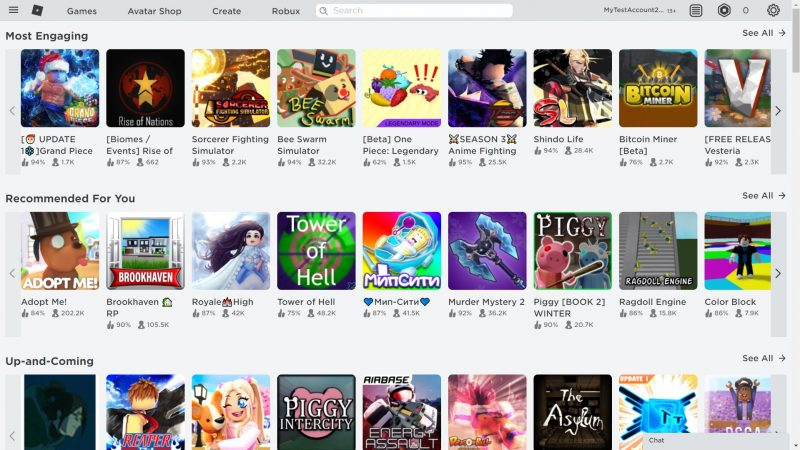
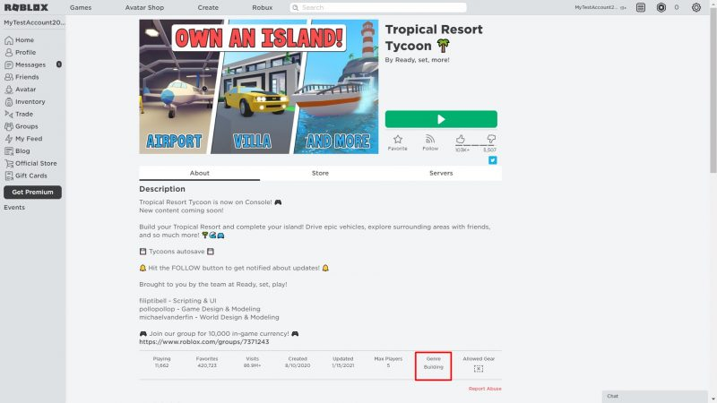
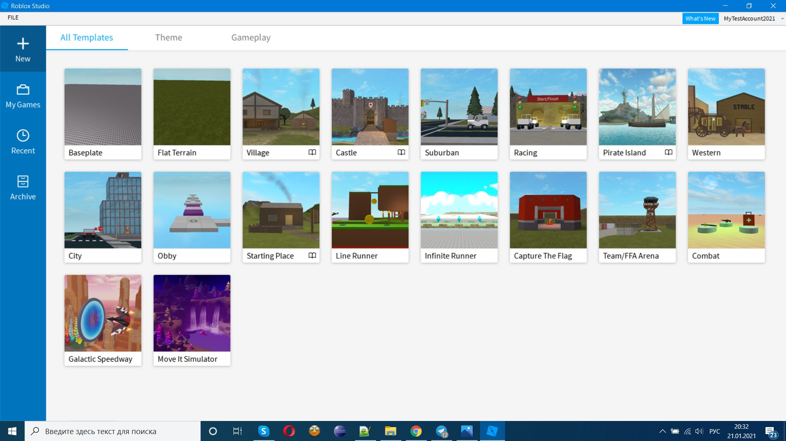
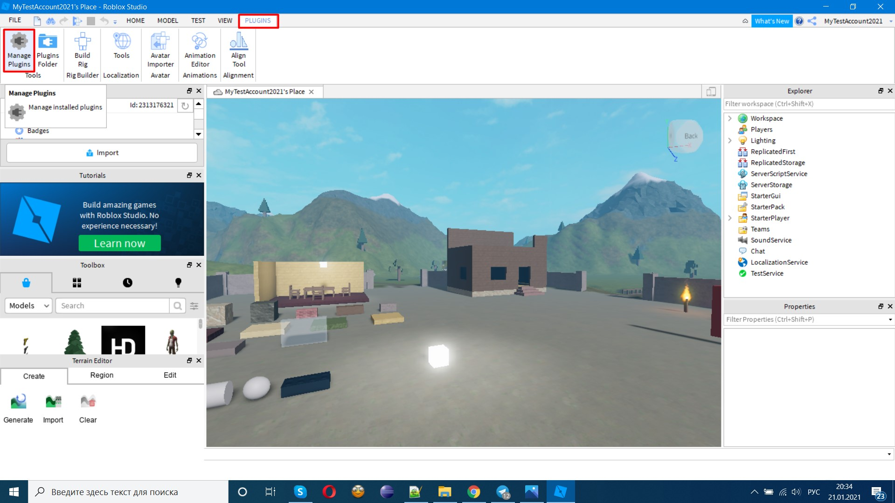
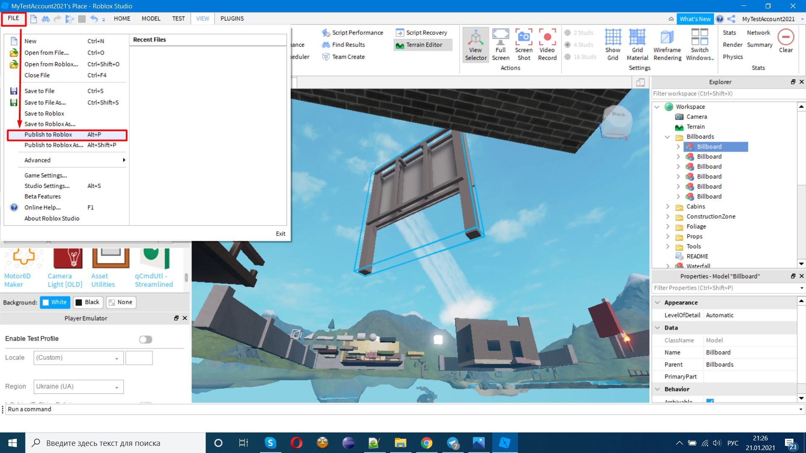

Разбираемся, какие игры здесь есть, как создавать собственные и зарабатывать на этом.
Roblox — это виртуальная платформа, которая появилась в 2006 году. В ней можно создавать собственные игры, посещать различные локации, общаться с другими пользователями и организовывать совместные активности.
Но Roblox не MMORPG в классическом её понимании. Это песочница (sandbox), в которой каждый может построить свою локацию и пригласить сюда гостей — а, возможно, и заработать на этом.
В игру ежедневно заходит около 800 тысяч игроков. В рейтинге MMORPG на сайте MMO Population она занимаетROBLOX 7-е место. Всего же у Roblox свыше 16 миллионов пользователей по всему миру.
Примерно 75% американцев в возрасте от 9 до 12 лет уже завелиWhere Has Your Tween Been During the Pandemic? On This Gaming Site аккаунт в Roblox. Но играть здесь смогут и дети помладше: например, в Google Play приложение входит в категорию «7+»
Игры для Roblox создаютHow Roblox proved that virtual goods are a $100 million business более 2 миллионов разработчиков по всему миру, в том числе и тинейджеры. Компанию оцениваютThe Roblox Gambit в 30 миллиардов долларов США. Всего год назад она стоила 4 миллиарда, но из-за пандемии число пользователей намного выросло — а вместе с этим увеличились и доходы.
Roblox пришёл уже практически на все популярные платформы. На ПК с Windows и на Mac вы можете зайти на официальный сайт Roblox, и после регистрации система автоматически предложит вам установить плеер для игр.
Приложения для iOS, Android и Xbox доступны в официальных магазинах:
На компьютере плеер запустит выбор игры в браузере. Там вы сможете найти подходящий вариант и посмотреть информацию о нём. Если решите запустить, снова вернётесь в плеер. На других платформах всё происходит непосредственно в приложениях.
Интерфейс самого Roblox англоязычный. Но в нём есть игры, которые поддерживают несколько языков, в том числе русский. Общаться в чате можно на любом языке.
Скачать требования к компьютеруПлейс — это отдельный игровой мир: место, куда пользователь может прийти и провести время определённым образом. Например, в популярном плейсе Adopt Me берут питомца и ухаживают за ним. А в Tower of Hell занимаются паркуром и проходят полосу препятствий.
Плейсы обычно делят на жанры и типы. Жанр — это общая атмосфера и принципы взаимодействия в игре. Вот они:
Жанр указывается в описании игры. Но чаще пользователи ориентируются не на него, а на тип плейса.
Например, существуют плейсы-плагиат по мотивам CS:GO, GTA V Online, Granny и других популярных игр. Есть также тайкуны (магнаты), где нужно развивать свой бизнес и зарабатывать на этом. В аниме и RP (Roleplay — ролевые игры) важно воссоздать с помощью персонажа определённый образ. Много игроков собирают и МОВА (Multiplayer Online Battle Arena): когда две команды на карте атакуют друг друга, чтобы занять главное строение противника.
Один из самых популярных типов игр в Roblox — это обби (obby). Название произошло от английского словосочетания obstacle course — «полоса препятствий». В таких плейсах нужно как можно быстрее преодолеть маршрут, используя прыжки и приёмы паркура.
С начала коронавирусных ограничений у пользователей появилось больше времени на Roblox. А разработчики поняли, что здесь можно зарабатывать вполне реальные деньги на создании плейсов и продаже геймпассов.
Например, 20-летняя Энн Шумейкер уже получилаWhere Has Your Tween Been During the Pandemic? On This Gaming Site от платформы более 500 тысяч долларов. Большую часть этой суммы она заработала с марта по август 2020 года — всего за 6 месяцев.
Может, и вам пора присмотреться к этой нише? Опыта профессионального гейм-девелопмента для этого обычно не требуется.
Этот скриптовый язык программирования похож на Python: логичный, простой, с лаконичным синтаксисом и минимальными шансами пропустить критическую ошибку, которая может проявиться в процессе работы. Lua напоминает и JavaScript — тоже реализует прототипную модель объектно-ориентированного программирования.
Все пользовательские типы данных в Lua строятся на механизме таблиц. Классы и объекты, множественное наследование, перегрузка операций и другие сложные вещи — через метатаблицы (таблицы с дополнительными метаданными). Словом, архисложных концепций здесь нет.
Казалось бы, в Roblox есть игры на любой вкус и цвет — от копий CS:GO и Among Us до симуляторов работы в пиццерии и решения математических задач. Но так как новые плейсы появляются каждый день, уверены: вы также сможете найти свою нишу. Вот несколько советов:
Среда разработки есть для Windows и macOS. Если нажать на этой странице кнопку Start creating, автоматически начнётся установка Roblox Studio. Это займёт меньше минуты.
В среде вам будут сразу доступны шаблоны. На их основе вы сможете быстро создать свой первый плейс. Также в Roblox Studio есть готовые 3D-модели персонажей и других объектов, инструменты для трансформации и работы с ландшафтом.
Наконец, в Roblox Studio встроены средства тестирования. Можно эмулировать поведение вашей игры на различных устройствах и исправить баги до того, как решите добавить плейс на платформу.
Они ускорят строительство плейса и подарят дополнительные возможности. Найти плагины можно на первой вкладке Marketplace в панели Toolbox — по умолчанию она находится слева.
Значительная часть плагинов доступна бесплатно. Но есть и те, что продаются за Robux.
Нажмите Alt + P или зайдите в меню File → Publish to Roblox. После загрузки на платформу ваша игра будет доступна в меню Profile → Creations.
Источник статьи: Статья